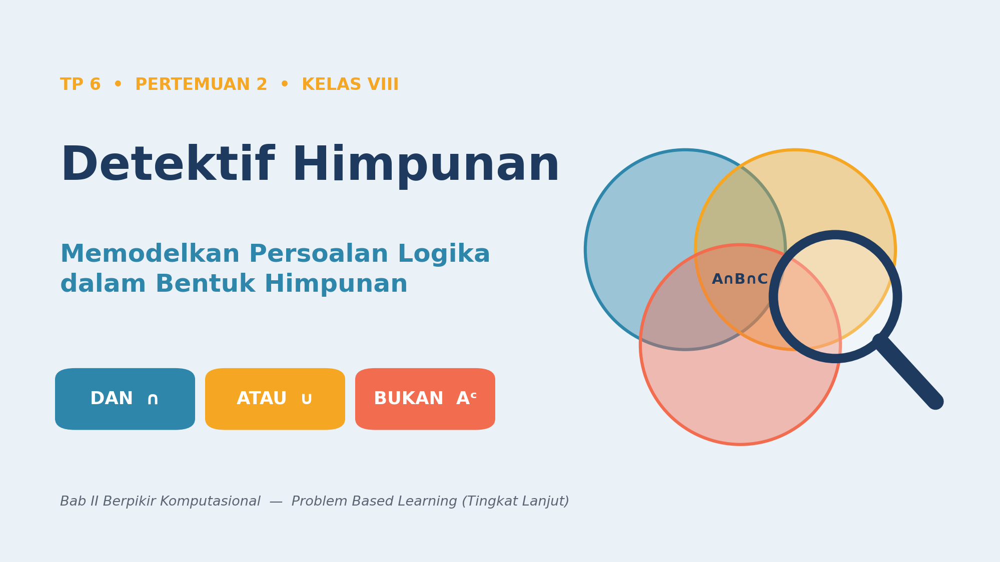
1Misi Hari Ini
Panitia Tarakan Fest minta bantuan tim detektif data. Ada tiga misi yang bakal kamu kerjakan bareng kelompok:
Data survei tiga lomba saling beririsan. Kamu isi Venn 3 lingkaran dan hitung.
10 tersangka, 5 petunjuk. Saring bertahap sampai tinggal satu pelaku.
Ubah himpunan jadi 0 dan 1, lalu temukan sendiri hukum De Morgan.
Ada tingkat tantangan. Selesai cepat? Kejar Bintang 3!
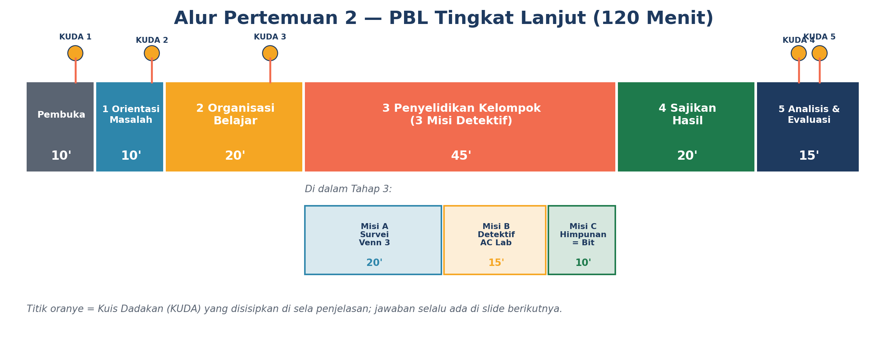
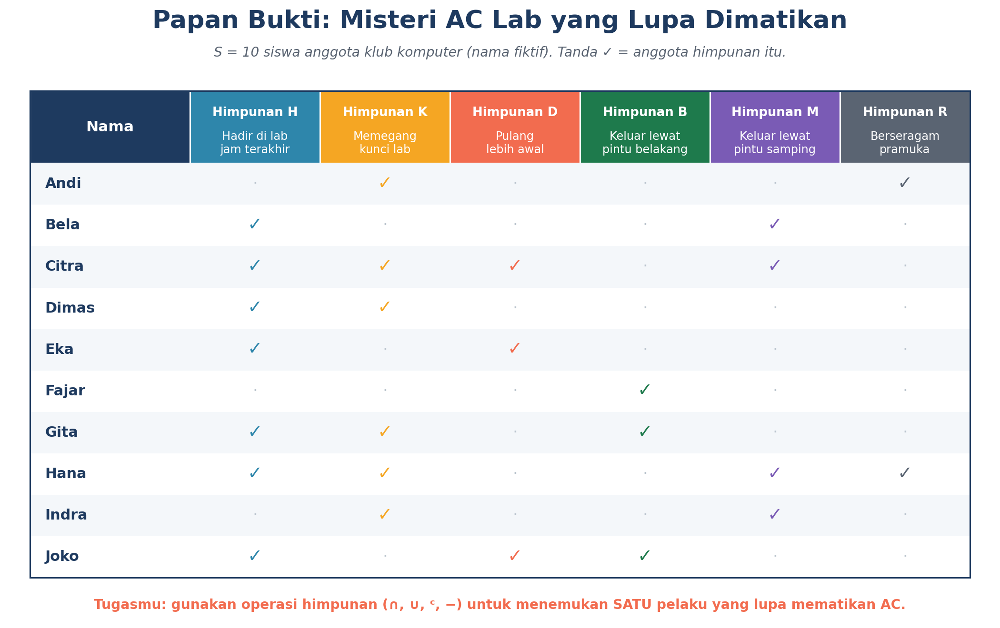
2Kamus Penerjemah: Kalimat → Himpunan
Kunci pertama seorang detektif himpunan: terjemahkan dulu, baru hitung. Kata-kata logika dalam kalimat punya “kembaran” di dunia himpunan.
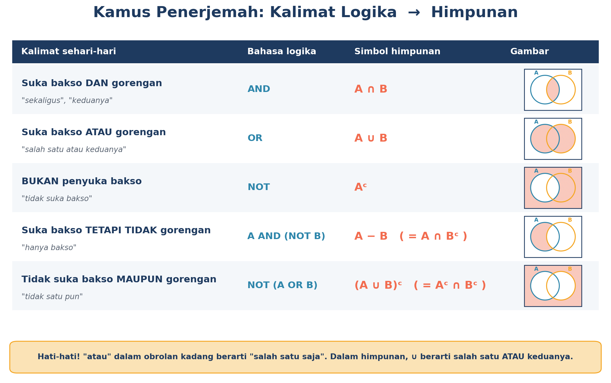
A ∩ BATAU → gabungan
A ∪ BBUKAN → komplemen
AᶜTETAPI TIDAK → selisih
A − B (sama dengan A ∩ Bᶜ)
Contoh
Misalkan I = penyuka IPA dan M = penyuka Matematika.
| Kalimat | Simbol |
|---|---|
| Suka IPA dan Matematika | I ∩ M |
| Suka IPA atau Matematika | I ∪ M |
| Suka IPA tetapi tidak Matematika | I − M |
| Tidak suka IPA | Iᶜ |
Lihat jawaban
3Diagram Venn 3 Himpunan = 8 Daerah
Dengan tiga lingkaran, kamu punya 8 daerah. Kenapa 8? Karena tiap anggota punya 2 pilihan (masuk atau tidak) untuk A, B, dan C: 2 × 2 × 2 = 8.
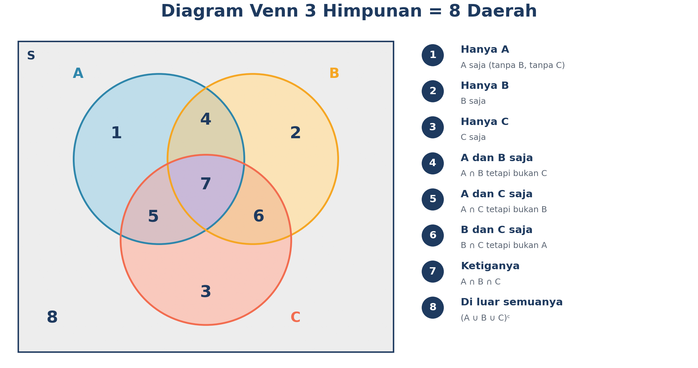
Resep Detektif Himpunan: 5 Langkah
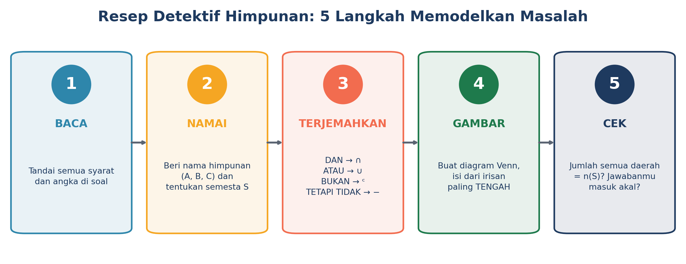
4Trik “Isi dari Tengah”
Angka irisan sudah memuat daerah yang di tengah, jadi kalau langsung ditulis, hasilnya bakal dobel. Solusinya: isi dari tengah dulu, lalu ke luar.
- Tengah: tulis n(A ∩ B ∩ C) di daerah paling tengah.
- Dua-dua saja: kurangi irisan dua himpunan dengan angka tengah.
- Satu saja: kurangi jumlah himpunan dengan semua daerah di dalamnya.
- Luar: n(S) dikurangi jumlah ketujuh daerah.
Contoh kasus: 36 siswa disurvei tentang jajanan. Bakso (A) = 15, gorengan (B) = 14, es teh (C) = 18. Bakso & gorengan = 6, bakso & es teh = 7, gorengan & es teh = 5, dan yang suka ketiganya = 3.
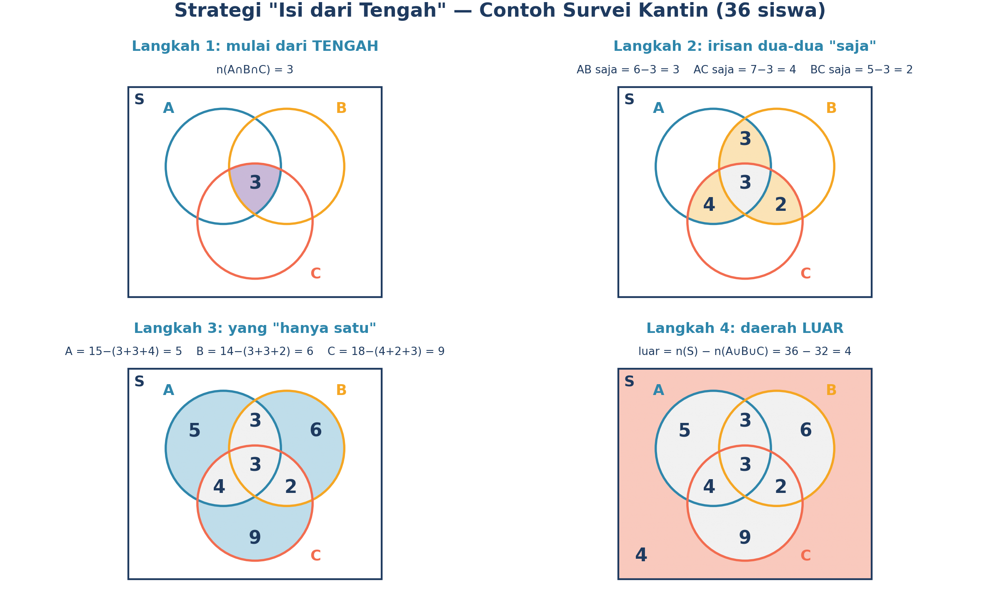
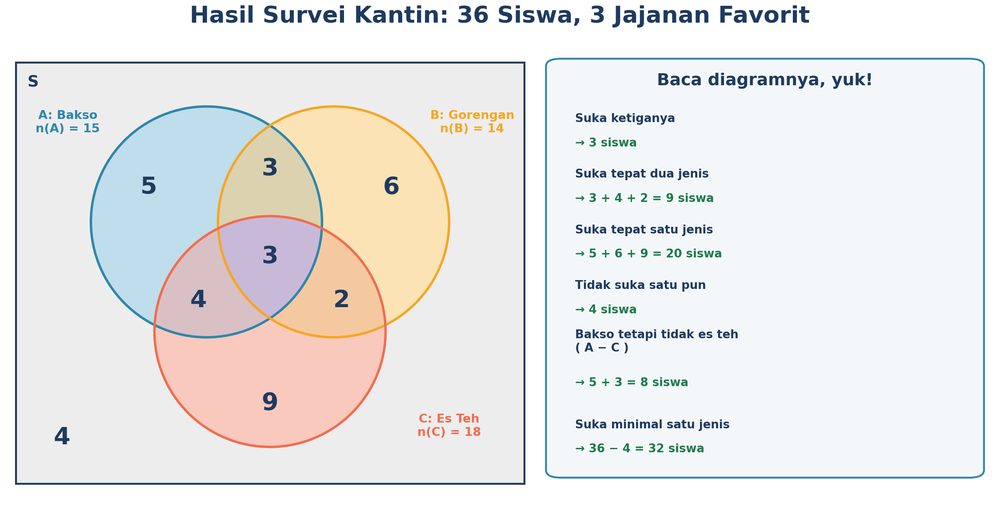
Lihat jawaban
Mau latihan di kertas? Cetak template Venn kosong ini:
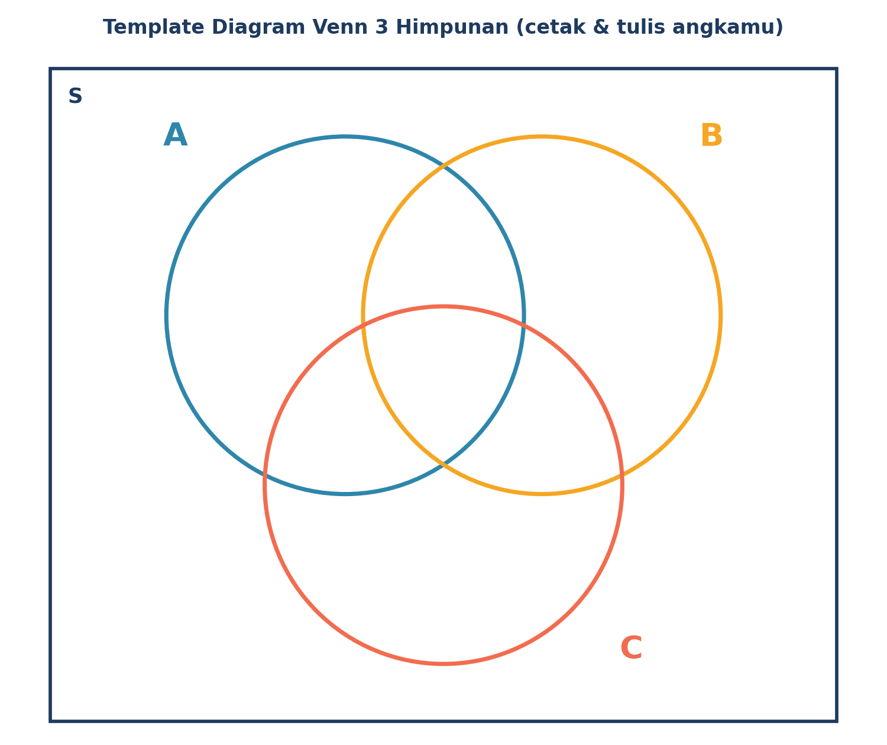
5Rumus 3 Himpunan (dan Kenapa Begitu)
n(A∪B∪C) = n(A)+n(B)+n(C) − n(A∩B) − n(A∩C) − n(B∩C) + n(A∩B∩C)
Idenya: setiap daerah harus terhitung tepat 1 kali.
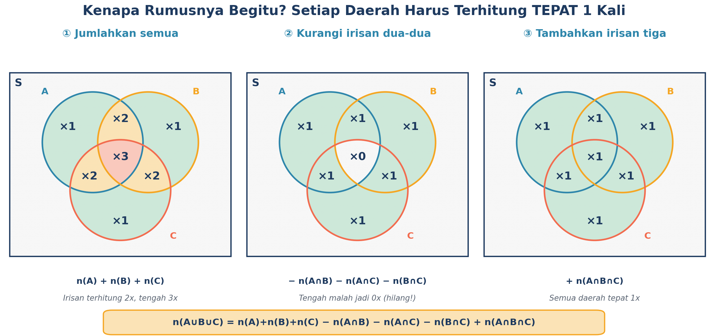
🧪 Kalkulator Rumus 3 Himpunan
Masukkan data survei, dan lihat hasilnya. Kalau datanya mustahil, kalkulator akan memberi tahu (ini latihan jadi auditor data!).
Lihat jawaban
6Detektif: Menyaring Tersangka Bertahap
Di kasus AC Lab, kamu punya banyak petunjuk. Rahasianya: satu petunjuk = satu himpunan, lalu tersangka disaring selangkah demi selangkah. Ini contoh mini yang bisa kamu coba langsung.
P1: Pelaku berkacamata. P2: Pelaku tidak naik motor. P3: Pelaku bertubuh tinggi. P4: Pelaku bukan anggota pramuka.
Data: kacamata (G) = Budi, Cici, Dedi, Fani. Naik motor (M) = Cici, Emi. Tinggi (T) = Ali, Dedi, Fani. Pramuka (R) = Ali, Fani.
🕵️ Saring Tersangkanya
Klik petunjuk satu per satu dan lihat siapa yang tersisa.
Lihat ekspresi lengkapnya
G ∩ Mᶜ ∩ T ∩ RᶜG ∩ Mᶜ = {Budi, Dedi, Fani} → ∩ T = {Dedi, Fani} → − R = {Dedi}. Pelakunya Dedi!
7Himpunan = Deretan Bit
Komputer tidak menyimpan “daftar nama”. Ia menyimpan deretan 0 dan 1. Untuk semesta S = {1, 2, …, 8}, setiap anggota punya satu kotak: 1 = ada di himpunan, 0 = tidak ada.
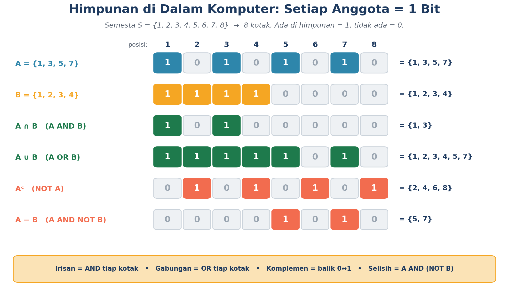
🧪 Lab Bit: Klik Kotaknya!
Klik kotak A dan B untuk mengubah 0/1 dan lihat hasil operasinya. Semesta S = {1,…,8}.
Lihat jawaban
8Hukum De Morgan: “Tidak” Membalik DAN ↔ ATAU
Bandingkan dua kalimat ini. Apakah sama artinya?
- “Aku tidak suka (bakso atau gorengan).”
- “Aku tidak suka bakso dan tidak suka gorengan.”
Ternyata sama! Itulah yang disebut Hukum De Morgan.
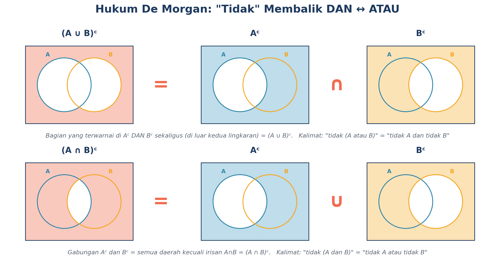
(A ∪ B)ᶜ = Aᶜ ∩ Bᶜ(A ∩ B)ᶜ = Aᶜ ∪ BᶜCara ingat: waktu “tidak” masuk ke dalam kurung, DAN berubah jadi ATAU dan ATAU berubah jadi DAN.
🧪 Buktikan Sendiri dengan Bit
Memakai A dan B dari Lab Bit di atas:
9Dipakai di Mana Sih?
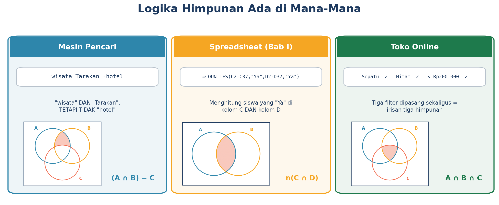
- Mesin pencari: mengetik
wisata Tarakan -hotelartinya “wisata Tarakan” dikurangi halaman yang memuat “hotel”. Itu selisih! - Toko online: filter kategori + warna + harga adalah irisan beberapa himpunan.
- Data audit: jumlah irisan tidak mungkin lebih besar dari himpunan terkecil, dan n(A∪B) tidak mungkin lebih besar dari n(S). Kalau melanggar, datanya pasti salah!
10KUDA Mandiri + Rangkuman
Uji dirimu! Klik jawabanmu, langsung ketahuan benar atau salah.
🌟 Rangkuman Kilat
DAN = ∩ • ATAU = ∪ • BUKAN = ᶜ • TETAPI TIDAK = −
8 daerah. Isi dari tengah, lalu dua-dua, satu, luar. Cek jumlah = n(S).
n(A∪B∪C) = jumlah − irisan dua-dua + irisan tigaSatu petunjuk = satu himpunan. Saring tersangka bertahap.
Ada = 1, tidak ada = 0. ∩ = AND, ∪ = OR, ᶜ = NOT.
(A∪B)ᶜ = Aᶜ∩Bᶜ dan (A∩B)ᶜ = Aᶜ∪Bᶜ
📝 Refleksi
- Aku bisa menerjemahkan kalimat dengan DAN, ATAU, BUKAN, TETAPI TIDAK ke simbol himpunan.
- Aku bisa mengisi Venn 3 himpunan mulai dari daerah tengah.
- Aku bisa menyaring tersangka dengan petunjuk bertahap.
- Aku bisa mengubah himpunan jadi deretan bit dan menghitung AND/OR/NOT.
Kerja bagus, detektif! Di pertemuan berikutnya kita masuk ke sistem bilangan, dunia 0 dan 1 yang lebih dalam. 🔢✨